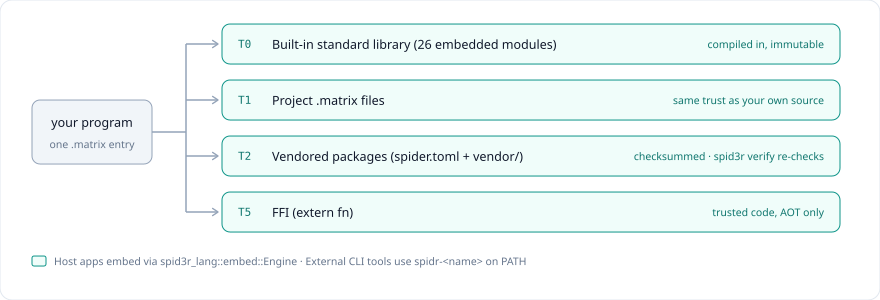
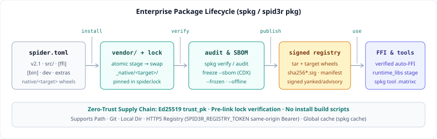
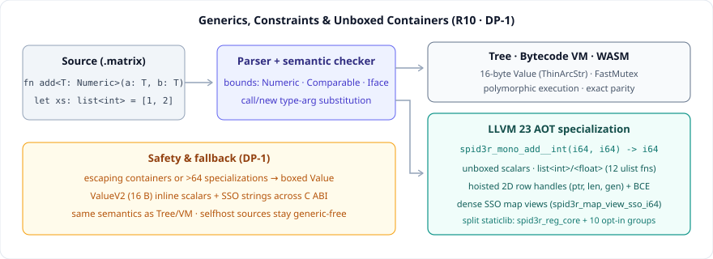
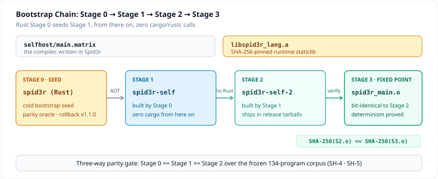
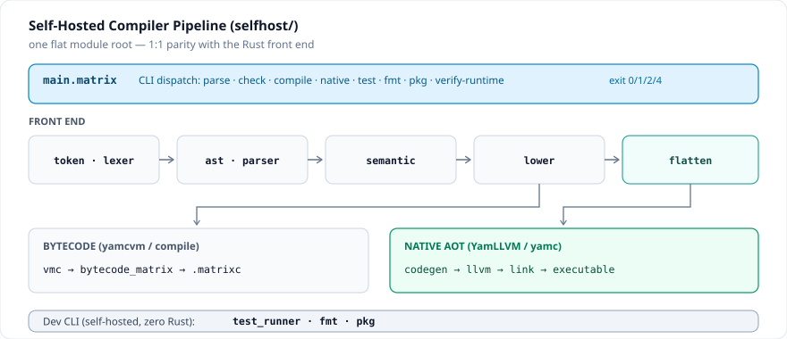
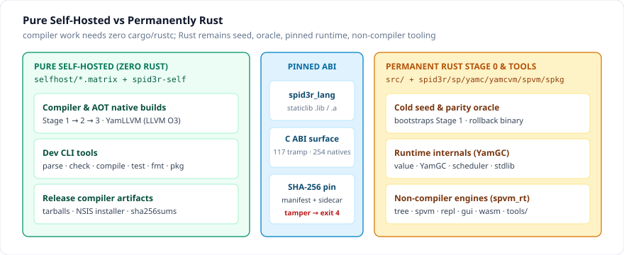
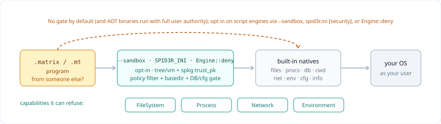

Spid3r Language & Developer Reference
Concise, complete manual for Spid3r v1.5.0 — zero-dependency core VM, YamLLVM native AOT, YamGC memory management, 26 embedded stdlib modules, 254 native builtins, and interactive browser WASM examples.
01. Introduction to Spid3r
Spid3r pairs familiar C/JS-style syntax with memory safety, generics, native BLAS-style linear algebra,
M:N channels, and multi-target delivery from one .matrix (or .mt) codebase.
⚡ Spid3r Engine
Four verified backends sharing one front end: AST tree oracle, 60-opcode spvm bytecode VM, YamLLVM (LLVM 23) AOT, and browser wasm32.
🪶 Zero-Dep Core
Compiles with --no-default-features and zero external crates. Three opt-in Cargo features: native, gui, and tls.
🧰 Batteries Included
26 embedded stdlib modules, 254 native builtins (SQLite, PostgreSQL, MySQL, HTTP/WS, JSON/CSV/MsgPack/CBOR/Protobuf), 20+ containers & BLAS.
🔁 Self-Hosted AOT
17-module self-hosted compiler (spid3r-self) reaching a Stage 1→2→3 bit-identical object fixed point across 136 corpus programs.
| Component | CLI / Artifact | Role |
|---|---|---|
| Unified Toolchain | spid3r · sp |
Single entry point for running, checking, compiling, building, testing, formatting, LSP, REPL, GUI, and packages. |
| Native AOT Compiler | yamc · spid3r-self |
Compiles .matrix/.mt directly to native machine code via YamLLVM (LLVM 23.1.0). |
| Bytecode & VM | yamcvm · spvm (spvm_rt) |
Compiles SHA-256-verified v3 .matrixc chunks and executes them on the pre-decoded 60-opcode VM. |
| Package Manager | spkg |
Declarative spider.toml dependencies, SHA-256 spider.lock, Ed25519 registries, zero install-time scripts. |
| Runtime & GC | spid3r_lang · YamGC |
117 C-ABI AOT trampolines, 254 natives, 16-byte RC values, 30-type cycle collector, and bounded AOT_HEAP arenas. |
📦 Installing Spid3r
Spid3r ships as a self-contained binary with static C-runtime linkage and all 26 stdlib modules embedded (only spid3r gui uses the OS WebView). Install via the
Microsoft Store ↗,
GitHub Releases ↗,
grab the editor formatter on the
VS Code Marketplace ↗,
or explore packages at
spid3r-spkg.github.io ↗.
| Platform | Channel | Highlights |
|---|---|---|
| Windows Installer | Spid3r-Setup-<ver>.exe |
NSIS setup with Python-style Add Spid3r to PATH checkbox (/NOPATH / SPID3R_NO_PATH=1), locked-process safe upgrade/uninstall, .matrix association, LLVM-C/spid3r_lang.lib, spid3r-control.exe, and offline spid3r-formatter.vsix (v1.0.1). |
| Microsoft Store ↗ | Spid3r-<ver>-x64.msix |
Install directly from the Microsoft Store (9NPH5XX0F6KF) ↗ (ANSNEWTECH.Spid3r). Exposes instant AppExecutionAlias commands on Windows PATH: spid3r, sp, yamc, yamcvm, spvm, spkg, spid3r-self, spid3r-control. |
| Linux / macOS | install.sh |
Detects OS/arch, installs atomically into ~/.spid3r/bin (or --dir / SPID3R_INSTALL_DIR), prompts/updates PATH (--modify-path, --no-modify-path, SPID3R_NO_PATH=1), and supports --source + --uninstall. |
| Build from Source | cargo install |
--no-default-features (zero external crates) or enable any mix of native, gui, and tls. |
| VS Code Extension ↗ | ANSNEWTECH.spid3r-formatter |
Official Visual Studio Marketplace ↗ extension for .matrix / .mt syntax highlighting and formatting (also bundled offline as spid3r-formatter.vsix). |
# Linux / macOS
curl -fsSL https://raw.githubusercontent.com/needyamin/spid3r/main/install.sh | sh
# Windows MSIX / Installer / Cargo verification
spid3r version
spid3r neofetch
# Cargo source build (zero-dep core or full native+tls)
cargo install --path . --no-default-features
cargo install --path . --no-default-features --features native,tls
Your First Spid3r Program
CLI execution (spid3r run / yamc) starts at fn main() { ... return 0; }, keeping helper fn/class/enum declarations at top level. The browser runner also supports top-level statements.
// 1. Hello World in Spid3r
fn main() {
println("Hello, World!");
let language = "Spid3r";
let version = "1.5.0";
println("Welcome to " + language + " v" + version + "!");
return 0;
}
02. Architecture & Toolchain CLI
One front end feeds every Spid3r target: AST oracle, bytecode VM, LLVM 23 native AOT, and browser WebAssembly.

| Stage | Module | What It Does |
|---|---|---|
| 1. Lexer | src/lexer/mod.rs |
DFA tokenizer with radix literals (0x/0o/0b), scientific floats, Unicode escapes, and {expr} string interpolation. |
| 2. Parser | src/parser/mod.rs |
Recursive-descent + Pratt parser; recovers up to 25 errors in check/lsp, strict 64-level nesting cap. |
| 3. Semantic | src/semantic/mod.rs |
Type inference, flow-sensitive T? narrowing, exhaustive match, generics/bounds, visibility, E1xxx spans. |
| 4. Lowering | src/lower/mod.rs |
Desugars ??, value-if, for (k, v) in map, destructuring, and sugar before codegen/interpretation. |
| 5. Backends | src/vm/ · src/interpreter/ · src/native/ |
spvm: pre-decoded 16-byte 60-opcode stream; tree: oracle; YamLLVM: LLVM 23 AOT with unboxed containers & split runtime staticlibs. |
| 6. YamGC | src/value/gc.rs · src/value/mod.rs |
16-byte RC values, 30-type cycle collector, non-blocking REGISTRY pruning, and AOT ValueV2/AOT_HEAP safepoints. |
The Spid3r Toolchain CLI

Engine embed.| Command / Alias | Key Flags / Notes | Purpose |
|---|---|---|
spid3r run <file> · sp run |
--engine vm|tree, --prof, --budget N, --max-call-depth N, --coverage, --no-opt, --sandbox |
Compile & execute .matrix/.mt immediately (default: spvm bytecode VM). |
spid3r check <file> |
--deny-warnings, respects NO_COLOR |
Multi-error parse + full semantic check without execution. |
spid3r compile · yamcvm |
-o out.matrixc, --dump |
Emit v3 .matrixc bytecode with SHA-256 payload checksum. |
spid3r exec · spvm · disasm |
--sandbox on exec; exits 4 on tamper |
Run or disassemble compiled .matrixc bytecode instantaneously. |
spid3r build · yamc |
--release (x86-64-v3), --icon, --subsystem windows, --embed, --bytecode, --bundle-runtime, --link-lib, --freestanding, --enforce-budget N |
YamLLVM native executable linked against split SHA-256-pinned spid3r_lang groups. |
spid3r gui <file> |
--width/--height, --theme, --devtools, --payload <exe> |
Native WebView desktop app (secure spid3r.app origin, memory-served payloads). |
spid3r bundle <file> |
--target wasm|desktop|android |
Package self-contained app or browser WebAssembly bundle. |
spid3r fmt · doc · lsp · repl · debug |
fmt --check, doc --json, debug --break N |
Canonical formatter, HTML/JSON doc extractor, stdio LSP, TTY REPL, and step debugger. |
spid3r test · bench |
test --filter, bench --compare --gate |
Differential 3-engine test runner and timing suite with regression gate. |
spid3r info · control |
info --json|--html|--no-redact; spid3r-control.exe |
Runtime diagnostics, local web panel (spid3r control), and native config dashboard. |
spid3r neofetch |
--no-color, respects NO_COLOR |
Zero-dependency two-column OS, CPU, RAM, battery, network & toolchain summary. |
spid3r config |
get|set|list|path|validate|reload|init |
Manage local spid3r.ini keys cleanly (usage error = exit 2; invalid = exit 1). |
spid3r init|add|install|verify|publish · spkg |
remove, tree, search --local, modules --tree, dist, pack/unpack |
Declarative package management with SHA-256 lockfiles and Ed25519 registry signing. |
Exit codes: 0 success · 1 compile/runtime/config failure · 2 CLI usage error · 4 corrupt/tampered .matrixc or staticlib.
Automated GitHub Actions Workflows

ci.yml), Multi-OS Release + MSIX/NSIS (release.yml), and continuous libFuzzer gates (fuzz.yml).- CI Matrix: 6 parallel jobs covering zero-dep Core, GUI, WASM, LLVM 23 AOT + Linux self-host bootstrap, Phase 0 benchmarks, and 136-program self-host parity.
- Release Pipeline: Builds 4 Unix tarballs, Windows NSIS setup (
Spid3r-Setup-<ver>.exe), Windows Microsoft Store.msix(makeappx.exe), and VS Code.vsix. - Fuzz Suite: Automated
cargo-fuzzcoverage across lexer, parser, VM loader, HTTP, WebSocket, and binary codecs.
Module Resolution
Every backend resolves import "name" through one shared resolver (spid3r modules --tree shows which won):
(1) importing file's folder → (2) SPID3R_PATH → (3) ./stdlib → (4) binary's stdlib/ → (5) enclosing vendor/ → (6) embedded stdlib.
Paths with .., drive letters, or absolute roots are rejected everywhere. Imported modules export only public declarations, supporting both import "mod" as m; and selective import { A, B as C } from "mod";.
The Ecosystem: Packages & Trust

spid3r_lang::embed::Engine; external CLI tools run as spidr-<name> on PATH.| Tier | Source | Trust & Guarantee |
|---|---|---|
| T0 | Embedded stdlib | 26 compiled-in .matrix modules + 254 native builtins. |
| T1 | Project .matrix |
First-party source files resolved relative to the project root. |
| T2 | Vendored packages | SHA-256 locked in spider.lock; re-verified via spid3r verify (vendor/<pkg>). |
| T5 | Native FFI (extern fn) |
Trusted native C-ABI calls; AOT-only (rejected by spid3r run). |
Packages (spid3r / spkg)
A package has a spider.toml and src/. spkg install / spid3r install resolves path, git, local directory, and HTTP(S) registries (SPID3R_REGISTRY / packages.registry; HTTPS requires the tls feature, enabled on Windows), verifies SHA-256 + Ed25519 signatures (packages.trust_pk / registry.pub), unifies diamond semver constraints across workspaces, and never executes install-time build scripts.

Native Compilation (AOT)
spid3r build / yamc (Stage 0) and spid3r-self build (self-hosted) emit standalone machine code via YamLLVM, dead-stripping unused runtime groups and defaulting --release to x86-64-v3 on AVX2 hosts.
Desktop Executables: Custom Icon, No Terminal
Turn any script or GUI into a native windowed app with custom resources and zero VC++ redistributable dependency:
| Flag | Effect |
|---|---|
--icon <path.ico> |
Embeds multi-resolution PE icon resources (override default via SPID3R_ICON). |
--subsystem windows |
Windows GUI subsystem (no terminal window spawned on launch). |
--product-name / --version |
Writes Windows RT_VERSION file Properties metadata. |
--embed <path> · --allow-gui |
Bundles assets/source into the binary trailer for gui --payload; run_payload() sets working dir & hides child console. |
Shipping a Single File
Combine --bytecode <app.matrixc> (replaces application IR with a strict run_payload_strict() launcher) and --bundle-runtime (embeds runtime extracted to %LOCALAPPDATA%\Spid3r\runtime\<hash>\) to ship one self-contained executable needing only OS WebView2/WebKit for GUI windows.
# Compile bytecode + build windowed executable with embedded UI & runtime
yamcvm app.matrix -o app.matrixc
yamc app.matrix -o App.exe --release --icon app.ico \
--subsystem windows --bytecode app.matrixc --embed ui --bundle-runtime
03. Syntax, Variables & Data Types
Clean brace-delimited blocks, semicolon-terminated statements, // and /* ... */ comments, and hybrid static-plus-dynamic typing.
Variables & Constants
Declare mutable bindings with let and immutable compile-time constants with const. Type annotations (: T), nullable types (T?), and unions (int | string) are checked statically when given and inferred otherwise.
fn main() {
let counter = 10;
counter += 5;
println("counter: " + string(counter));
const MAX_BUFFER = 1024;
const APP_NAME = "Spid3rApp";
println("Buffer: " + string(MAX_BUFFER) + " for " + APP_NAME);
let port: int | string = 8080;
let host: string? = "127.0.0.1";
let is_secure: bool = false;
println("Listening on " + (host ?? "0.0.0.0") + ":" + string(port) + " tls=" + string(is_secure));
return 0;
}
Primitive Data Types & Literals
| Type | Representation | Literal Examples |
|---|---|---|
int |
64-bit signed integer | 42, 1_000_000, 0xFF, 0b1010_1100, 0o755 |
float |
IEEE 754 64-bit float | 3.14, 1.25e4 (prints trailing .0) |
bool |
Boolean | true, false |
string |
Immutable UTF-8 string | "Spid3r", 'text', "hi {name}", "\u{1F600}" |
null |
Absence of value | null |
bytes |
Contiguous byte buffer (256 MiB single-allocation ceiling) | bytes("abc"), bytes([65, 66]) |
bigint |
Arbitrary-precision integer (stdlib) | 12345678901234567890n |
Type Casting with as
Convert values explicitly with expr as TargetType (int, float, string, bool) or constructor functions (int(s), float(s), string(x)).
fn main() {
let hex_mask = 0xFF;
let bin_flags = 0b1010_1100;
let scientific = 1.25e4; // 12500.0
println("Hex 0xFF: " + string(hex_mask));
println("Binary: " + string(bin_flags));
println("Scientific: " + string(scientific));
let cast_int = "128" as int;
let float_val = cast_int as float;
let is_valid = cast_int as bool;
println("cast_int + 2 = " + string(cast_int + 2));
println("float_val / 2 = " + string(float_val / 2.0)); // 64.0
println("is_valid = " + string(is_valid));
return 0;
}
40 Reserved Keywords
Spid3r reserves 40 keywords that cannot be used as identifiers:
| Group | Keywords |
|---|---|
| Declarations & Modules | let, const, fn, import, as |
| Control Flow | if, elif, else, while, for, in, break, continue, return, match |
| Errors | try, catch, finally, throw |
| Literals & Logic | true, false, null, and, or, not |
| OOP & Enums | class, interface, new, self, super, extends, implements, public, private, abstract, enum |
| Generators & Async | yield*, spawn, async, await |
*yield note: consume generators via import "gen" and next(it); a bare for x in gen() iterates the generator wrapper rather than yielding items.
04. Operators & Null Safety
C-style arithmetic, bitwise, and boolean precedence paired with short-circuiting ?? (null-coalescing) and ?. (optional chaining).
| Category | Operators | Notes |
|---|---|---|
| Arithmetic & Assign | + - * / % · = += -= *= /= %= |
Int division truncates; mixed int/float promotes to float. |
| Bitwise | & | ^ ~ << >> |
Parenthesize masks in comparisons: (u & 128) == 0. |
| Comparison & Logic | == != < <= > >= · and/&&, or/||, not/! |
Short-circuit evaluation across all four engines. |
| Null Safety | ?? (coalesce) · ?. (optional nav) |
Flow analysis narrows T? to T after if x != null. |
fn main() {
let mask = (1 << 4) | (0b0011 ^ 0b0001) & 0xFF;
println("Mask: " + string(mask));
let user_name = null;
println("Welcome, " + (user_name ?? "Guest") + "!");
let account = null;
let balance = account?.wallet?.balance ?? 0.0;
println("Balance: $" + string(balance));
let x = 15;
if (x >= 10 and x <= 20) {
println("x is in [10, 20]");
}
return 0;
}
05. Strings, Slicing & Interpolation
Immutable UTF-8 strings with negative indexing, "{expr}" interpolation, format() specifiers (tie-to-even rounding), and fast slice/split helpers.
| Operation | Usage | Behavior |
|---|---|---|
| Index / Slice | s[-1] · s.slice(a, b) |
Character-indexed UTF-8 access (bytes gives O(1) byte scans). |
| Transform | trim, ltrim, rtrim, upper, lower, replace, repeat, pad_left/pad_right |
Returns new strings; original stays immutable. |
| Split / Search | split(sep), join(list), contains, starts_with, ends_with, index_of |
index_of returns -1 when absent; parts.join("") builds strings in O(n). |
| Format | "Val: {:.2}".format(v) · "{:x}".format(n) |
Fixed precision, hex/binary/octal, width & alignment. |
fn main() {
let text = " Spid3r Language ";
println("Trimmed: [" + text.trim() + "]");
println("Upper: " + text.upper());
println("Slice(2, 8): [" + text.slice(2, 8) + "]");
println("Last char: " + "Spid3r"[-1]);
let user = "Dev";
let score = 98.5;
println("Welcome {user}! Score: {score}");
println("Result: {:.2}".format(88.6875)); // 88.69
let parts = "apple,banana,cherry".split(",");
println("Count=" + string(len(parts)) + ", second=" + parts[1]);
return 0;
}
06. Control Flow & Loops
if/elif/else works as both a statement and a value-returning expression; loops cover while, C-style for, and collection iteration.
fn main() {
let marks = 85;
let grade = "";
if (marks >= 90) { grade = "A"; }
elif (marks >= 80) { grade = "B"; }
elif (marks >= 70) { grade = "C"; }
else { grade = "F"; }
let status = if (marks >= 60) { "Passed" } else { "Failed" };
println("Grade: " + grade + " (" + status + ")");
return 0;
}
Loops: while and for
Supports while (cond), C-style for let i = 0; i < n; i += 1, for item in list, for (k, v) in map, plus break and continue.
fn main() {
let sum_evens = 0;
for let i = 0; i <= 10; i += 1 {
if (i % 2 != 0) { continue; }
if (i > 8) { break; }
sum_evens += i;
}
println("Sum evens <= 8: " + string(sum_evens));
let steps = 0;
let n = 12;
while (n > 1) {
if (n % 2 == 0) { n = n / 2; } else { n = 3 * n + 1; }
steps += 1;
}
println("Collatz(12) steps: " + string(steps));
let roles = map("Alice", "Admin", "Bob", "Dev");
for (name, role) in roles {
println("{name} -> {role}");
}
return 0;
}
07. Functions & Closures
First-class functions, default parameter values, mutable lexical closures, and fluent arrow lambdas (x => expr) with .filter, .map, and .reduce.
fn power(base: int, exp: int = 2) -> int {
let res = 1;
for let i = 0; i < exp; i += 1 { res *= base; }
return res;
}
fn make_accumulator(start: int) {
let total = start;
return fn(val: int) {
total += val;
return total;
};
}
fn main() {
println("power(3): " + string(power(3)));
println("power(2, 4): " + string(power(2, 4)));
let acc = make_accumulator(100);
println("acc(20): " + string(acc(20)));
println("acc(15): " + string(acc(15)));
let nums = [1, 2, 3, 4, 5, 6];
let squared_evens = nums.filter(x => x % 2 == 0).map(x => x * x);
let sum_all = nums.reduce(0, (a, b) => a + b);
println("Squared evens: " + string(squared_evens));
println("Sum: " + string(sum_all));
return 0;
}
08. Enums, Pattern Matching & Destructuring
Algebraic enum sum types (unit and payload variants) paired with exhaustiveness-checked match arms and boolean guards (if ...).
Destructuring: Unpack lists and tuples directly into bindings with let (a, b) = pair; and loop tuples for (k, v) in map.
enum Command {
Move(x, y),
Rotate(degrees),
Stop
}
fn describe_command(cmd) {
return match (cmd) {
Move(x, y) if x == 0 and y == 0 => "Hold position",
Move(x, y) => "Move to ({x}, {y})",
Rotate(deg) => "Rotate {deg} deg",
Stop => "Emergency Stop!",
_ => "Unknown"
};
}
fn main() {
println(describe_command(Move(10, 20)));
println(describe_command(Move(0, 0)));
println(describe_command(Stop()));
let (x, y) = [100, 200];
let (ip, port, proto) = tuple("10.0.0.1", 443, "https");
println("Point=({x}, {y}) Endpoint={proto}://{ip}:{port}");
return 0;
}
09. Error Handling: Exceptions & Option / Result
Use structured try/catch/finally with throw for exceptional control flow, or explicit option (some/none) and result (ok/err) values.
fn parse_positive_int(s: string) {
try {
let val = int(s);
if (val <= 0) { throw "must be positive, got " + string(val); }
return ok(val);
} catch (e) {
return err(string(e));
} finally {
println("checked: " + s);
}
}
fn main() {
let r1 = parse_positive_int("42");
let r2 = parse_positive_int("-5");
println("r1 ok=" + string(is_ok(r1)) + " val=" + string(r1.unwrap()));
println("r2 err=" + string(is_err(r2)));
return 0;
}
10. Object-Oriented Programming & Generics
Classes with explicit constructors, encapsulation, single inheritance, interfaces with default methods, abstract bases, static members, and monomorphized generics.
Core OOP Rules & Visibility
- Constructors: Declare
public fn new(params) { ... }and instantiate vianew ClassName(args). - Visibility: Members default to
privateunless markedpublic; methods take explicitself. - Single Inheritance: Inherit via
class Sub extends Baseand override methods naturally. superDelegation: Callsuper(args)in constructors orsuper.method(...)in overrides.- Abstract & Static:
abstract class Base/abstract fn work(self);prevent direct instantiation;static fndefines class-level helpers.
class Animal {
public let name;
private let energy;
public fn new(name: string) {
self.name = name;
self.energy = 100;
}
public fn speak(self) -> string {
return self.name + " makes a sound";
}
public fn play(self, cost: int) {
self.energy -= cost;
return self.energy;
}
}
class Dog extends Animal {
public let breed;
public fn new(name: string, breed: string) {
super(name);
self.breed = breed;
}
public fn speak(self) -> string {
return super.speak() + " -> Woof! (" + self.breed + ")";
}
}
fn main() {
let pet = new Dog("Rex", "Shepherd");
println(pet.speak());
println("Energy left: " + string(pet.play(25)));
return 0;
}
Interfaces & Polymorphism
Classes conform to structural method contracts using implements InterfaceA, InterfaceB (interfaces may include default method bodies).
interface Drawable {
fn draw(self) -> string;
fn area(self) -> float;
}
class Circle implements Drawable {
public let radius;
public fn new(r: float) { self.radius = r; }
public fn draw(self) -> string { return "Circle(r=" + string(self.radius) + ")"; }
public fn area(self) -> float { return 3.14159 * self.radius * self.radius; }
}
class Rectangle implements Drawable {
public let w;
public let h;
public fn new(w: float, h: float) { self.w = w; self.h = h; }
public fn draw(self) -> string { return "Rect(" + string(self.w) + "x" + string(self.h) + ")"; }
public fn area(self) -> float { return self.w * self.h; }
}
fn main() {
let shapes = [new Circle(5.0), new Rectangle(4.0, 6.0)];
for s in shapes {
println(s.draw() + " area=" + string(s.area()));
}
return 0;
}
Generics, Constraints & AOT Monomorphization
- Type Params & Bounds: Multi-parameter generics
<K, V>with built-in or interface bounds:<T: Numeric>,Comparable,Printable, or<T: Drawable + Comparable>. - Explicit or Inferred: Call sites accept
identity<int>(42)andnew Box<string>("hi"), or infer types automatically. - YamLLVM Unboxing: AOT specializes up to 64 scalar monomorphizations (
spid3r_mono_*) and lowers homogeneouslist<int>/list<float>to unboxedi64/f64buffers with loop-hoisted views and BCE.
class Box<T> {
public let value: T;
public fn new(v: T) { self.value = v; }
public fn get(self) -> T { return self.value; }
}
fn identity<T>(x: T) -> T { return x; }
fn main() {
let b = new Box<int>(42);
println("Boxed int: " + string(b.get()));
println("Generic fn: " + identity<string>("Spid3r"));
return 0;
}

spid3r_mono_*, unboxed numeric lists, hoisted 2D row handles, and dense SSO map views.11. Built-in Collections & Data Structures
20+ built-in native containers — all sharing len, is_empty, and clear, with single-threaded lock-free FastMutex upgrading safely on spawn.
| Type | Constructor | Key Methods & Guarantees |
|---|---|---|
| List | list(1, 2) · [1, 2] |
push, pop, get, set, remove(value), remove_at(idx), insert, sort, sort_by, argsort, slice, map/filter/reduce. Prints as [1, 2]. |
| Map | map("k", 1) · {"k": 1} |
get, set, m[k], remove(k), has, keys, values, items. SWAR small-map (≤16) + ordered FxHash; prints map{a: 1}. |
| Set | set(1, 2) |
add, remove, contains, union, intersect, difference, is_subset; prints set{1, 2}. |
| Bag | bag() |
Zero-arg constructor. Multiset with add, remove, count_of, contains. No set algebra — use set for union/difference. |
| Tuple | tuple(1, "a", true) |
Immutable fixed-size sequence; t[0], len(t), destructuring. |
| Bytes | bytes("s") · bytes([65, 66]) |
Mutable/sliced binary buffer up to the 256 MiB single-allocation ceiling; get, set, slice, to_hex, to_base64. |
| Stack / Queue / Deque | stack() · queue() · deque() |
LIFO stack (throws on empty pop), FIFO queue, O(1) ends on deque (push_front/back, pop_front/back). |
| Heap / Priority Queue | heap("min"|"max") · priority_queue() |
O(log n) push/pop, O(1) peek, change_priority, merge. |
| Trees & Tries | trie() · bst() · binary_tree() |
trie: insert, contains, starts_with, with_prefix; trees: insert, inorder/preorder/postorder. |
| Graph | graph("directed"|"undirected") |
add_node, add_edge, neighbors, find_path (Dijkstra), bfs, dfs, cycle. |
| Other Native Structures | ring_buffer(n) · linked_list() · hash_table(n) · vec() |
Bounded overwriting ring buffer, doubly/singly linked lists, growing bucketed hash tables (load_factor), and dynamic vec. |
Method vocabulary & sorting rules — complete reference
Shared & Container Vocabulary
All containers support len, is_empty, and clear. Lists provide mutating (sort, reverse) and non-mutating (sorted, reversed) forms, plus index_of, append, join(sep), for_each, all, and any.
Comparator Sorting & Float Precision
list.sort_by(cmp) and sorted_by(cmp) take fn(a, b) -> int returning negative, zero, or positive. Numeric sorting handles ints and finite floats consistently without NaN corruption.
fn main() {
let items = [40, 10, 50, 20, 30];
items.sort();
println("Sorted: " + string(items) + ", removed=" + string(items.remove(30)));
let student = map("name", "David", "grade", 95);
student["major"] = "CS";
println("Removed grade: " + string(student.remove("grade")) + " keys=" + string(student.keys()));
let set_a = set(1, 2, 3, 4);
let set_b = set(3, 4, 5, 6);
println("Union: " + string(set_a.union(set_b)));
let h = heap("min");
h.push(50); h.push(10); h.push(30);
println("Min heap pop: " + string(h.pop()));
let words = trie();
words.insert("apple"); words.insert("app"); words.insert("banana");
println("Prefix 'app': " + string(words.with_prefix("app")));
return 0;
}
12. Linear Algebra: Vector & Matrix
Contiguous IEEE-754 f64 buffers capped at 16,777,216 elements with element-wise operators, BLAS-style products, LU decomposition, and NumPy .npy persistence.
Vector & Matrix Operations
| Area | Constructors & Methods | Notes |
|---|---|---|
| Vector | vector([1.0, 2.0]) · dot, norm, mean, sum, + - * / |
Supports slicing, scalar math, and unit normalization. |
| Matrix Indexing | matrix(r, c, fill) · m[r, c] · get(r, c) · set(r, c, v) |
Row-major contiguous layout; supports matrix-vector and matrix-matrix multiply. |
| Decompositions & Axis | A.det(), A.trace(), A.transpose(), A.inverse(), A.solve(b), A.sum(axis), A.mean(axis) |
LU solver for Ax = b; axis 0/1 reductions collapse to a vector (null returns scalar float). |
| NumPy I/O | save_npy(path, A) · load_npy(path) |
Reads and writes standard binary .npy v1.0 dense arrays. |
fn main() {
let v1 = vector([1.0, 2.0, 3.0]);
let v2 = vector([4.0, 5.0, 6.0]);
println("Dot: " + string(v1.dot(v2)) + ", Norm: " + string(v1.norm()));
let A = matrix(2, 2, 0.0);
A.set(0, 0, 4.0); A.set(0, 1, 7.0);
A.set(1, 0, 2.0); A.set(1, 1, 6.0);
println("det(A)=" + string(A.det()) + " trace(A)=" + string(A.trace()));
let A_inv = A.inverse();
println("A^-1[0,0]=" + string(A_inv.get(0, 0)));
let x = A.solve(vector([18.0, 10.0]));
println("x = [" + string(x[0]) + ", " + string(x[1]) + "]");
return 0;
}
13. Concurrency, Tasks & Channels
True multi-core M:N worker pool (no GIL, up to 256 workers via spid3r.max_workers) with typed tasks, buffered channels, mutexes, lock-free atomics, and deadlock detection.
Tasks, Join & Synchronization
spawn&.join():let t = spawn fn() { ... };runs work concurrently and returns a join handle.async/await: Cooperative task syntax yielding clean values across the scheduler.- Channels:
let ch = channel();creates an unbounded FIFO queue withsend(v),recv(),try_recv(), andclose(). - Mutex & Shared Refs:
mutex(init)guards shared state vialock()/unlock();ref(v)shares mutable boxes safely. - Atomic Int:
atomic_int(init)(defaults to0) provides lock-freeload(),store(v),add(d),sub(d), andcas(exp, new).
fn main() {
let worker = spawn fn() {
let acc = 0;
for let i = 1; i <= 100; i += 1 {
acc += i;
}
return acc;
};
let atom = atomic_int(7);
println("Task sum 1..100: " + string(worker.join()));
println("Atomic CAS(7->42): " + string(atom.cas(7, 42)) + ", val=" + string(atom.load()));
return 0;
}
14. Standard Library & System API
254 compiled-in native builtins plus 26 embedded .matrix modules — available across CLI, VM, AOT, and WASM (OS/network builtins omit cleanly in browser sandboxes).
System, Filesystem, Networking & Databases
| Domain | Key Functions | Behavior |
|---|---|---|
| Console & Runtime | print, println, eprint, read_line, type_of, len, now_ms, unix_ms, env, env_set, args, spid3rinfo, config_get/set |
Cross-engine I/O, monotonic & wall clocks, introspection. |
| Filesystem & Paths | read_file, write_file, file_exists, is_file, is_dir, list_dir, remove_file, exe_path, file_open/read/write/seek/fsync/lock, path_join |
Returns ok(...)/err(...) results; enforces security.basedir. |
| Process, Poll & Signals | spawn_process, exec_capture, poll_create/wait, after_ms, signal_requested, shutdown_requested |
Process spawning (hidden: true on Windows), epoll/kqueue/WSAPoll, graceful shutdown. |
| HTTP, TLS, WS & UDS | http_fetch, http_write_response_chunk, tls_listen/tls_accept, ws_connect/accept/send/recv, uds_listen/connect |
TLS backed by OS native-tls (Schannel/OpenSSL/Security.framework) with --features tls. |
| SQL Databases | db_open (SQLite) · pg_connect/query/exec (PostgreSQL 16 SCRAM-SHA-256) · mysql_connect/query/exec (MySQL 8 caching_sha2_password) |
Parameterized queries and native wire-protocol clients with zero C-driver build headaches. |
| Math & Random | abs, sqrt, pow, min, max, clamp, floor, ceil, round, sin/cos/tan, random_int, random_float, random_bytes(n) |
Only random_bytes(n) is CSPRNG-backed (/dev/urandom / OS entropy). |
Hashing, Passwords, Encodings & Formats
| Domain | Key Functions | Details |
|---|---|---|
| Digests & Signing | sha256, sha512, hmac_sha256, pbkdf2_sha256, ed25519_keypair/sign/verify, secure_compare |
FIPS 180-4 / RFC 2104 / RFC 8018 / RFC 8032 strict canonical verify. |
| Passwords | bcrypt_hash(pw, cost=10), bcrypt_verify, argon2(pw, salt, t, m, p, var, len) |
bcrypt_hash requires cost 4–18; Argon2 supports i/d/id. |
| Text & Binary Codecs | base64_encode/decode, hex_encode/decode, msgpack_encode/decode, cbor_encode/decode, pb_encode/decode |
RFC 4648 base64/hex plus zero-dep MessagePack, CBOR, and Protobuf wire codecs. |
| JSON & CSV | json_parse, json_write, parse_csv, write_csv |
SWAR-accelerated RFC 8259 JSON parser/writer and RFC 4180 CSV. |
| Compression | gzip_compress/gunzip, deflate/inflate, zlib_compress/unzlib, zip_create/read/list, crc32 |
Streaming compression with CRC-32 / Adler-32 integrity checks. |
| Regex | regex_match(pat, text), regex_find, regex_find_all, regex_replace |
Linear-time Thompson NFA (immune to catastrophic backtracking). |
| DateTime | datetime_parts(sec), format_datetime(sec, fmt) |
Civil calendar breakdown and UTC strftime formatting. |
R12.1)
Transport encryption (HTTPS / TLS sockets) delegates to the OS TLS stack via native-tls behind --features tls. Pure-Rust hashing/signature natives pass RFC and negative vectors, have not yet undergone an independent external audit, and secret-key production workloads should run behind an audited HSM or TLS terminator.
fn main() {
let config = map("app", "Spid3r", "port", 8080, "features", ["wasm", "gc", "blas"]);
let json_text = json_write(config);
println("JSON: " + json_text);
println("Parsed app: " + json_parse(json_text)["app"]);
println("SHA-256: " + sha256("spid3r-token"));
println("HMAC: " + hmac_sha256("secret", "user=100"));
println("Email valid: " + string(regex_match("^[a-z0-9._%+-]+@[a-z0-9.-]+\\.[a-z]{2,}$", "dev@spid3r.dev")));
println("Ports: " + string(regex_find_all("\\d+", "8080, 8081, 9090")));
println("Epoch 0: " + format_datetime(0, "%Y-%m-%d %H:%M:%S UTC"));
return 0;
}
The 26 Embedded Standard Library Modules
Imported via import "mod" as m; or import { sym } from "mod"; (no disk files required). Exported functions keep their module prefix (e.g. uuid.uuid_v4(), toml.toml_parse(txt), ev.start() — never guess unprefixed names).
| Category | Modules (26) | Capabilities |
|---|---|---|
| Web & Wire | http, web, middleware, session, multipart, fastcgi, smtp, ftp, event |
Routers, TLS servers, CORS/rate-limit, HMAC cookies, form uploads, FastCGI, mail/FTP clients, epoll/kqueue/WSAPoll loop. |
| Data Formats | toml, yaml, xml, unicode, tz, uuid, semver |
TOML v1.0 (toml_parse), YAML, XML DOM, UCD 15.1 NFC/NFD, 598 IANA timezones, CSPRNG UUIDv4 (uuid_v4), semver ranges. |
| Numbers & Math | bigint, decimal, rational, complex, mathx, stats |
Arbitrary ints, fixed-point money decimals, exact fractions, complex math, FFT/roots, distributions/regression/ANOVA. |
| Testing & Iter | assert, mock, testkit, gen |
Assertions, test stubs/spies, suite runner, and cooperative generator helpers. |
14b. Runtime Configuration & Local Control
One local INI file (spid3r.ini — 45 keys across 12 sections) governs execution limits, network guards, security filters, paths, and caching, inspectable via spid3r config, spid3r control, spid3r-control.exe, and spid3rinfo().
The spid3r.ini Schema
| Section | Keys (45 Total) | Purpose |
|---|---|---|
[spid3r] |
env, engine, max_workers, queue_cap, deadlock_abort, task_drain_ms, gc |
Default engine (vm|tree), scheduler bounds, GC toggle, and [env.<name>] overrides. |
[runtime] |
wall_clock_limit_ms, memory_limit_mb, timezone |
Fatal execution deadline, script heap cap, and process timezone. |
[net] |
timeout_ms, max_body, max_headers, keepalive_ms |
HTTP slowloris timeouts, body/header limits (413/431), keep-alive window. |
[memory] |
max_steps, max_call_depth, gc_threshold, allocation_cap_mb |
Instruction budget, recursion depth (default 1000), GC cadence, container cap. |
[debug] · [errors] · [logging] |
enabled, log_level, log_stdout · level, display, log_file · enabled, file, rotate_mb, audit |
Diagnostics filtering, stderr mirroring, audit log and size rotation. |
[modules] · [security] |
path, disable, assert_active · basedir, disable_natives, deny_* |
Import search roots, module/assert toggles, script capability filters. |
[packages] · [paths] · [cache] |
registry, allow_*_git, trust_pk · cache_dir, state_dir, sqlite_path · bytecode_dir |
Registry URLs/signing keys, runtime extraction/SQLite paths, and SHA-256 .matrixc cache. |
[spid3r]
engine = vm
max_workers = 256
gc = true
[runtime]
wall_clock_limit_ms = 0
memory_limit_mb = 0
timezone = UTC
[net]
timeout_ms = 30000
max_body = 8388608
max_headers = 64
keepalive_ms = 5000
[security]
basedir =
disable_natives =
The spid3rinfo() Builtin
One collector, multiple formats: spid3rinfo() (redacted map), spid3rinfo("json"), spid3rinfo("html"), spid3rinfo("text"), or spid3rinfo("map", true) (local unredacted).
Sections include Spid3r, System, Installation, Features, Modules, Configuration, Environment (omitted in WASM), Memory (interpreter), and AOT Memory (TAG_HEAP + ARENA_SLAB_LEN).
fn main() {
let m = spid3rinfo();
println("Version: " + m["Spid3r"]["Spid3r version"]);
println("Has AOT Memory: " + string(m.has("AOT Memory")));
println("JSON type: " + type_of(spid3rinfo("json")));
let eng = config_get("spid3r.engine");
println("Engine: " + eng + ", set tz ok=" + string(config_set("runtime.timezone", "UTC")));
return 0;
}
Operator deep dive — limits, reload safety & redaction
Limits, Diagnostics & Cross-Platform Notes
wall_clock_limit_ms triggers a fatal uncatchable timeout on tree and vm engines; memory_limit_mb raises a catchable error. Keys containing password, token, secret, credential, cookie, or *_key auto-redact as [redacted sha256:<12>] unless --no-redact is passed locally. StartupOnly keys (like engine or sqlite_path) require restart while live keys update via config_reload() or SIGHUP.
15. VM Internals, Self-Host, YamGC, WASM & FFI
Inside Spid3r's execution engines, bit-identical self-hosting boundary, cycle-collecting memory model, WebAssembly ABI, and freestanding C interop.
Execution Engines
| Engine | Entry | Implementation |
|---|---|---|
Bytecode VM (spvm) |
spid3r run · exec |
60-opcode chunks compiled to 16-byte pre-decoded records (src/vm/decode.rs) with fused superinstructions & leaf call fast paths. |
| Tree Oracle | --engine tree |
Reference AST walker (src/interpreter/) and embeddable spid3r_lang::embed::Engine; pins semantic truth. |
| Native AOT (YamLLVM) | spid3r build · yamc |
LLVM 23 machine code linked against SHA-256-pinned spid3r_lang (budget opt-in via --enforce-budget <N>; no GUI bridge). |
Self-Hosted Compiler Architecture
selfhost/ hosts a 17-module compiler and dev CLI (spid3r-self) built with zero Cargo/Rust calls after Stage 0 bootstrap, validated bit-identically (Stage 1 → 2 → 3) across the 136-program frozen corpus and coupled cleanly to Rust's 117 C-ABI trampolines + 254 natives.


selfhost/: flat module root driving front end, .matrixc, LLVM-C AOT, and CLI tools.
spid3r_lang ABI.Bytecode Format, Frames, Optimizer & Policy
A Chunk packs 60 opcodes, constant pools, nested Arc prototypes, and source spans inside a SHA-256-verified v3 .matrixc container (exits 4 on tamper; forward 1.x compatible). Frames preserve lexical module globals and cap recursion at 1,000 catchable frames, while try/catch/finally restores operand-stack depth cleanly.
The optimizer applies oracle-identical constant folding, peepholes, dead-code elimination, and while loop rotation (--no-opt disables optimization + runtime superinstructions cleanly).
Embedders enforce step limits (--budget N) and script-level native capability filters (--sandbox, [security], Engine::deny). Native AOT binaries always execute with full OS user authority.

tree/vm) via native stubs; Native AOT runs with full user authority.YamGC: Reference Counting, Cycle Sweep & AOT Arenas
YamGC pairs immediate reference counting on compact 16-byte Value cells (8-byte ThinArcStr + lock-free single-threaded FastMutex) with a rootless mark-sweep cycle collector (triggered every 1,024 tracked allocations across 30 GcTrace impls + REGISTRY pruning) and bounded thread-local ValueV2 / AOT_HEAP frame-root sweeps on Native AOT (gc_collect(), gc_live_cells(), SPID3R_GC=0).

ValueV2/AOT_HEAP safepoint reclamation.WebAssembly: Browser VM ABI
web/spid3r.wasm compiles the dependency-free spvm engine to wasm32-unknown-unknown:
| WASM Export | JS SDK | Purpose |
|---|---|---|
spid3r_wasm_eval(src, eng) |
runtime.eval(src, eng) |
Runs code in vm or tree engine and captures stdout/errors. |
spid3r_wasm_check(src) |
runtime.check(src) |
Lexes, parses, and type-checks without executing. |
spid3r_wasm_format(src) |
runtime.format(src) |
Canonical formatter pass. |
spid3r_wasm_version() |
runtime.version() |
Returns version metadata. |
spid3r_wasm_alloc / free |
SDK internal | Linear memory buffer helpers. |
Systems FFI, POD Structs & Freestanding AOT
- C Interop (
extern fn): Supports variadics, pass-by-value POD structs, C callbacks (ffi_callback(f, "fn(...)->...")), and library linking via--link-lib <name>. - Opt-In Dynamic Loading: Runtime
dl_open/dl_sym/dl_callrequire--allow-dlopenat build time. - Freestanding Objects:
--freestanding(with--emit-obj,--entry <sym>,--sysroot <dir>) emits standalone bare-metal IR/objects without the standard runtime.